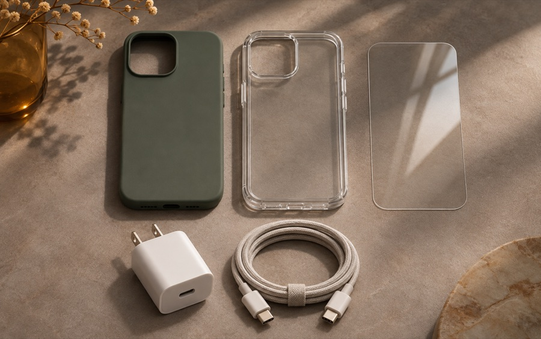

ANTALYA F
i
X
WhatsApp
Telegram
TR
…
iPhone 15 Pro Max
iPhone
Samsung
Xiaomi / Redmi

@antalyafix
Tekelioğlu Cad. No:55, Fener
Fener Mah. Tekelioğlu Cad. No:55, TerraCity AVM, Kat −2, 07160 Muratpaşa/Antalya
…
0544 112 19 11
WhatsApp
Telegram